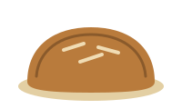
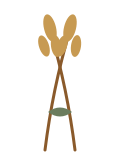
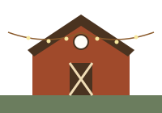

Welcome to Wildflour Bakery
Slow mornings, warm bread, and rooms that feel like home.
The Bread Comes First

Wildflour Bakery began as a village bread counter in Milltown, NY — a single brick oven, a chalkboard menu, and a line out the door on Saturday mornings. The counter is still here, and so is the oven. Bread comes out by seven: rounds of rye and sourdough, seeded batards, and the cinnamon knots that vanish before nine.
Everything is mixed, shaped, and baked in the same room where you buy it. We mill a portion of our own flour from River Valley grain, and the proof baskets that line the back wall have been in use since the bakery's first season. If you smell woodsmoke on the walk up Orchard Lane, you are close.
The Bakehouse Loft

Above and behind the bakery sits the Bakehouse Loft — a restored timber event barn with long maple tables, a woodstove, and string lights over the old threshing floor. It hosts harvest suppers, winter gatherings, retreats, and weddings for parties large and small.
The Loft seats up to 140 for supper under the rafters, and the covered patio adds room for lawn games, a band, or a long dessert table. Ask about micro-wedding weekends in the quieter months — the Loft is at its coziest with the woodstove going and snow on the meadow.
See the weddings page for offerings and a sample weekend.
Suppers, Retreats & Gatherings
Beyond weddings, the Loft keeps a full calendar of its own. Our supper club lays two long tables in linen for a set menu built around what the valley farms bring in — stoneware, rye-stalk centerpieces, and bread still warm from the oven downstairs. Retreat groups take the whole place for a weekend: mornings in the meadow, afternoons at the work tables, and evenings around the woodstove.
We keep the format simple on purpose. One gathering at a time, one kitchen, one crew. Rosa plans the menus, Theo runs the room, and the same bakers who shaped your morning loaf plate your dessert. Nobody is hurried out the door.
“We came for a loaf of rye and ended up booking the whole barn for our harvest supper. The crew at Wildflour made forty strangers feel like one long table of old friends.” — Marta, supper club regular
Come See the Ovens
Walk the orchard rows, warm up by the woodstove, and let us bake for your next celebration.
Plan a Visit